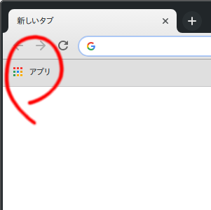
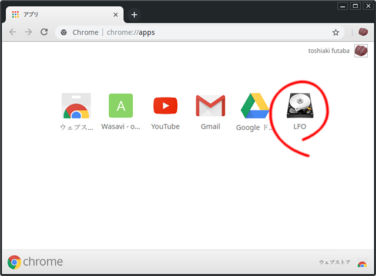
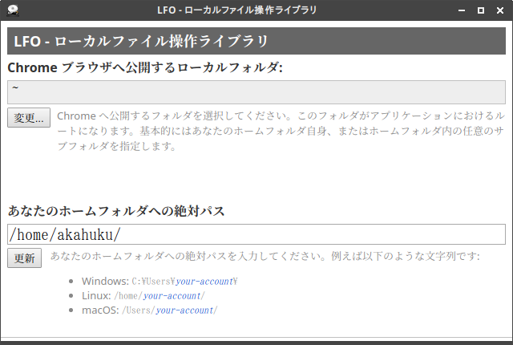
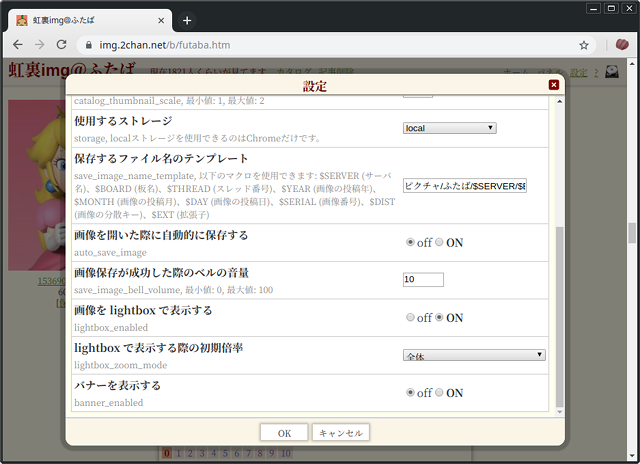

Chrome 版の赤福プラスで画像を直接ローカルに保存する
Chrome 版の赤福プラスでは、画像を Dropbox/Google Drive/OneDrive といったオンラインストレージに加え、直接ローカルに保存することができます。
LFO のインストール
画像を直接保存するためには、赤福プラス本体以外に「LFO - ローカルファイル操作ライブラリ」が必要です。まずこれを Chrome にインストールします。
LFO - ローカルファイル操作ライブラリ
https://chrome.google.com/webstore/detail/lfo-local-file-operator-l/dkbdmkncpnepdbaneikhbbeiboehjnol
LFO の設定
LFO はインストールしたあとの設定が重要です。
まず LFO を起動します。新しいタブを開いて左上のアプリボタンを押します。または、直接 chrome://apps ページを開きます。

LFO のアイコンがあるので、クリックします。

LFO が起動します。
「変更...」ボタンを押して、ホームフォルダを指定します。
次に指定したホームフォルダの絶対パスを、下のテキストボックスに入力します。絶対パスは、Windows であれば[ドライブ名]:\から、Linux などでは/から始まる文字列です。Windows の場合はパスの区切り文字は\でも/でもかまいません。いずれの場合もパスの最後はパスの区切り文字で終えてください。
最後に「更新」ボタンを押して設定を適用します。LFO 側の設定は以上です。LFO のウィンドウは閉じてかまいません。
赤福プラスの設定
赤福プラスが有効な状態でふたばの任意の板へ行き、設定リンクを押して設定ダイアログを開きます。

以下の設定が画像保存に関わります:
- 使用するストレージ
LFO を用いてローカルに画像を保存するには、local を選択します。
- 保存するファイル名のテンプレート
この値が LFO に設定したルートフォルダからの相対パスを含んだ画像ファイル名になります。
ルートフォルダをC:\Users\foo\とし、テンプレートをピクチャ\ふたば\$SERIAL.$EXTとした場合、最終的に生成される画像ファイル名は例えばC:\Users\foo\ピクチャ\ふたば\1536921478249.jpgなどとなります。$で始まるマクロには以下のものがあります:
- $SERVER 画像があるサーバ名に展開されます。例えばimgやmayなど。
- $BOARD 画像がある板名に展開されます。例えば虹裏ならbなど。
- $THREAD 画像があるスレッド番号に展開されます。
- $YEAR 画像が投稿された西暦年数に展開されます。
- $MONTH 画像が投稿された月に展開されます。
- $DAY 画像が投稿された日に展開されます。
- $SERIAL 画像に与えられた番号に展開されます。
- $DIST 画像に与えられた番号の最後の3桁に展開されます。
- $EXT 画像の拡張子に展開されます。ドットは含みません。
- 画像を開いた際に自動的に保存する
これをONにすると自分が思っているより遥かに多くのスケベな絵が貯まっていきます。
- 画像保存が成功した際のベルの音量
0〜100で指定します。0 にすると無音になります。